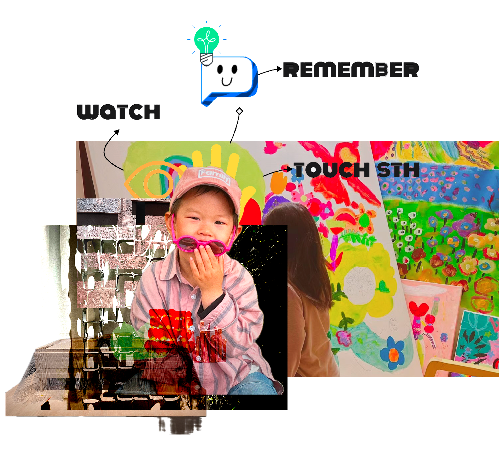
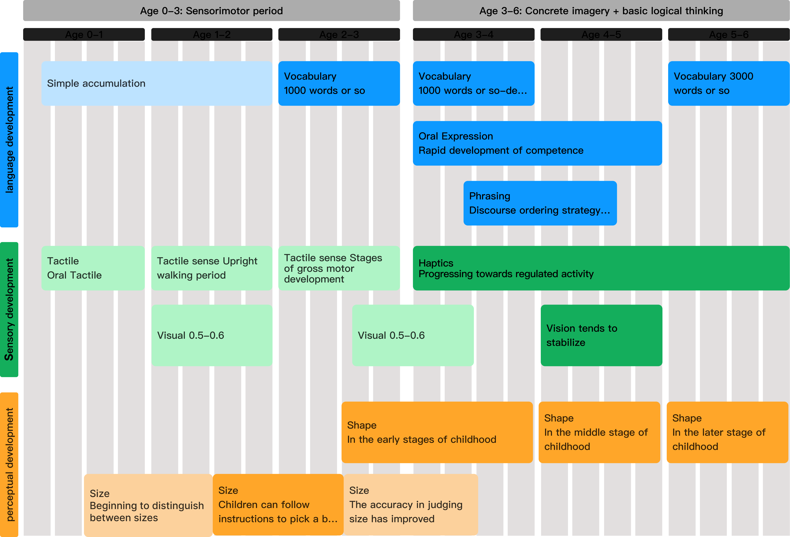
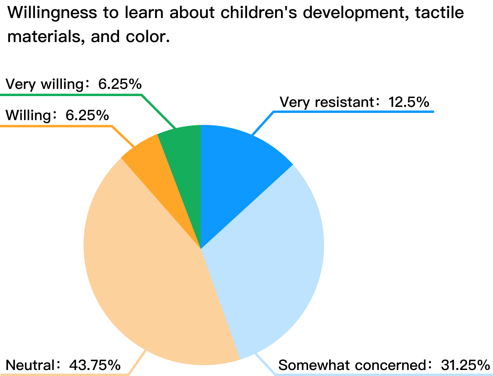
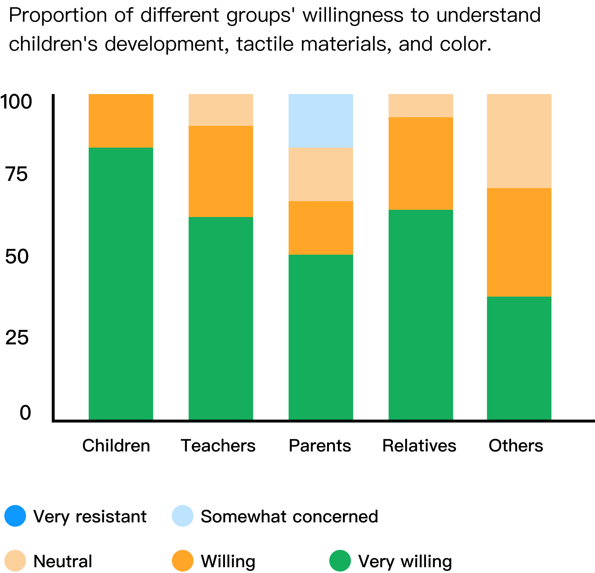
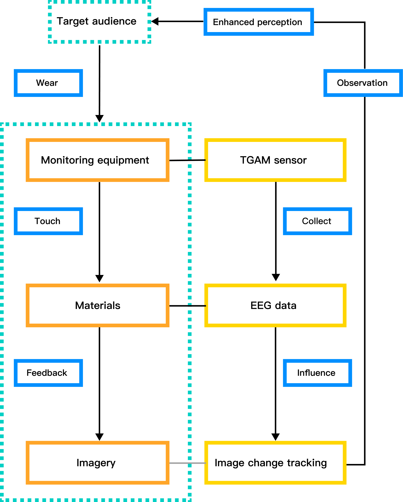

BJFU Graduation Design: Color Touchland
About the event
This project focuses on children's tactile perception, aiming to explore how visual and tactile senses work together to enhance sensory cognition development. The inspiration comes from a child in the family who is highly interested in various textures. The project involves designing different tactile materials and color combinations, using brainwave responses to connect vision and touch, thereby enhancing children's tactile memory and emotional cognition.
Background
I chose to focus on children's tactile perception because the young child in my family often shows great interest in various textures. Family members also buy different toys to help her with tactile training.
Visual Haptic is a phenomenon where the brain recalls tactile sensations when it sees a medium, triggering the experience of touch through sight. Child psychologist Arshuler's color tracking research shows that different colors hold specific meanings for children.
The research combines visual haptics with the significance of colors for children, using different color combinations to evoke specific tactile experiences. This links "seeing" and "touching" through color, where visual feedback from "seeing" reinforces tactile sensations, helping children better remember touch experiences.

Research
Desktop research on the target group of children aged 2-6
Based on desktop research of the study group, it was identified that children aged 2-6 are in a period of enhanced tactile and visual experience.

The study collected 273 questionnaires focusing on children's development, tactile materials, and color to explore public awareness of these areas.


Concept
Children wear EEG devices and interact with various materials in front of them, experiencing different tactile sensations. As their brainwaves change in response to these sensations, the EEG detects these variations, which in turn influences the color patterns in the visual display.

Ideation
Tactile materials are selected based on roughness, hardness, and viscosity, resulting in five types-rough, smooth, hard, soft, and sticky-restructured through color compositions to suggest tactile experiences.

making process

final outcome

interaction and feedback